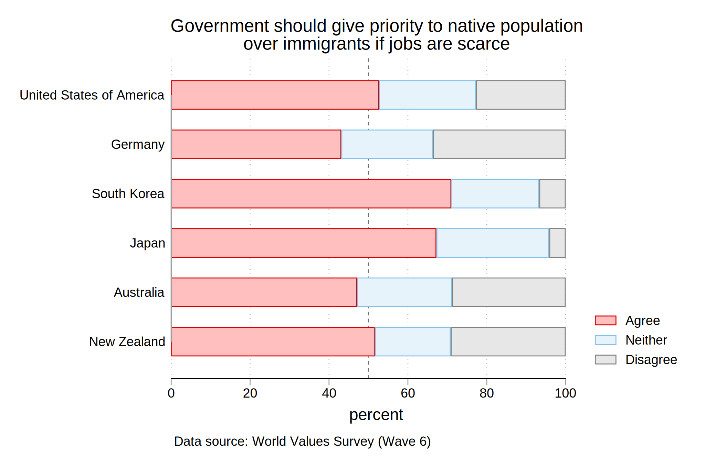

Sustainable Coexistence: Exploring Public Opinion Towards Immigration Regimes in Japan
Eddie Hearn
Musashi University
JPSA 2023
Evolving Foreign Population
Evolving Foreign Population
- Decoupling from economic growth
- Spreading out
- Cultural distance
Foreign population and growth
Foreign population and growth

Spreading out

Cultural distance
Research outline
- As Japan becomes an increasingly plural society, what type of immigration regime does the Japanese public prefer?
- Use acculturation theory to develop a typology of immigration regimes
- Conduct a survey experiment on nationally-representative sample of Japanese adults
Acculturation strategies
- Acculturation: process of change that results from prolonged interaction between different cultural or ethnic groups
- Different acculturation strategies produce divergent models of acculturation
- 2 main dimensions of strategies producing 4 general models of acculturation (Berry 2006)
Acculturation strategies and models
Typology of Immigration Regimes
Experiment
- Independently manipulate 2 attributes of a foreign resident in Japan (contact and assimilation)
- 5 vignettes (4 treatments and control)
- Between subject design with random assignment to experimental group
Control
Tran is a young man from a country in Southeast Asia. Tran came to Japan to work and study with the hopes of finding a better life here. Tran is happy to be living in Japan.
High contact
Tran is a young man from a country in Southeast Asia. Tran came to Japan to work and study with the hopes of finding a better life here. He has rented an apartment in a mansion near his work. Other than Tran, all the residents of the mansion and surrounding neighborhood are Japanese. Tran rarely comes into contact with other foreigners. Instead, he has frequent contact with his Japanese neighbors in nearby shops, at local community events, and while walking around the neighborhood. Tran is happy to be living in Japan.
Low contact
Tran is a young man from a country in Southeast Asia. Tran came to Japan to work and study with the hopes of finding a better life here. He has rented an apartment in a mansion near his work. Like Tran, most of the residents of the mansion and surrounding neighborhood are foreigners. Tran rarely comes into contact with Japanese people. Instead, he has frequent contact with other foreigners in nearby shops, at international community events, and while walking around the neighborhood. Tran is happy to be living in Japan.
High assimilation
Tran is a young man from a country in Southeast Asia. Tran came to Japan to work and study with the hopes of finding a better life here. In general, he feels that Japan is very different from his homeland. He does everything he can to live by the traditions and customs of Japan, even if this means that he has to abandon the traditions and customs that he was raised with in Southeast Asia. Tran is happy to be living in Japan and prefers the traditions and customs of Japan to those of his home country
.Low assimilation
Tran is a young man from a country in Southeast Asia. Tran came to Japan to work and study with the hopes of finding a better life here. In general, he feels that Japan is very different from his homeland. He does everything he can to live by the traditions and customs that he was raised with in Southeast Asia, even if this means that he has to reject the tra- ditions and customs of Japan. Tran is happy to be living in Japan and prefers the traditions and customs of his home country to those of Japan.
.Results
Regime typology
Manipulation checks (contact)

Manipulation checks (assimilation)
Discussion
- Japanese public has a strong preference for assimilation and contact
- Disconnect between national, institutional, and individual acculturation strategies
- National policy: multicultural coexistence
- Institutions (education, justice, health): exclusionary
Acculturation strategies of minority groups
- Short term workers have little incentive to assimilate
- Short term workers are blocked from integrating with local community
- Creates further disconnect between expectations of dominant group and acculturation outcomes
Thank you!
Immigration measure
(1 = completely disagree to 7 = completely agree)
- Tran is the type of foreigner I would welcome living in Japan.
- Foreigners like Tran create problems for our society.
- I feel positive about foreigners like Tran living permanently in Japan.
- I would oppose policies that allow foreigners like Tran to live permanently in Japan.
- I would support policies that allow foreigners like Tran to live permanently in Japan.
Manipulation checks
- How frequently do you think Tran comes into contact with Japanese people in his everyday life?
- To what degree do you think Tran has adopted Japanese traditions and customs?